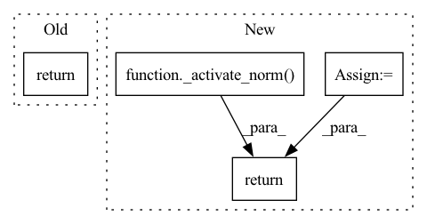

Pattern ID :13137
Before Change
out = fn_input
for idx in range(depth):
out = _single_calc(out, sequence_input, linear_param[idx])
return out
def _forward_pass(fn_input: torch.Tensor, sequence_input: torch.Tensor, linear_param0: torch.Tensor,After Change
batch = int(fn_input.size(0))
features = int(features_sqrt ** 2)
fn_input = fn_input.reshape(batch, features)
fn_input = _activate_norm( fn_input)
b = torch.mm(fn_input, linear_param_a)
c = torch.mm(sequence_input, linear_param_b)
o = _activate_norm(b * c)
o = torch.mm(o, linear_param_c)
o = o.reshape(batch, features_sqrt, features_sqrt)
return o.qr().Q
@torch.jit.scriptIn pattern: SUPERPATTERN
Frequency: 3
Non-data size: 4
Instances Fragment ID: 44408964
Project Name: homebrewnlp/homebrewnlp
Commit Name: e1b260e4f3e6f7890e180ad3579dc16279f0e115
Time: 2021-08-09
Author: 39779310+ClashLuke@users.noreply.github.com
File Name: module.py
M Class Name: AnonimousClass
N Class Name: AnonimousClass
M Method Name: _calc(5)
N Method Name: _calc(4)
M Parent Class:
N Parent Class:
M File Name: module.py
N File Name: module.py
M Start Line: 23
M End Line: 26
N Start Line: 13
N End Line: 24
Before Change
@torch.jit.script
def feed_forward(inp: torch.Tensor, weight0: torch.Tensor, weight1: torch.Tensor, batch: int) -> torch.Tensor:
out = inp.bmm(weight0.expand(batch, -1, -1))
out = _activate_norm(out)
return out.bmm(weight1.expand(batch, -1, -1))
class FeedForward(torch.jit.ScriptModule):After Change
@torch.jit.script
def feed_forward(inp: torch.Tensor, weight0: torch.Tensor, weight1: torch.Tensor, kernel_size: int) -> torch.Tensor:
return conv(_activate_norm( conv(inp, weight0, kernel_size)) , weight1, kernel_size)
class FeedForward(torch.nn.Module): Fragment ID: 44408960
Project Name: homebrewnlp/homebrewnlp
Commit Name: 007c929505d510af1b041da75b1dbfbcdc2f931f
Time: 2021-08-27
Author: 39779310+ClashLuke@users.noreply.github.com
File Name: module.py
M Class Name: AnonimousClass
N Class Name: AnonimousClass
M Method Name: feed_forward(4)
N Method Name: feed_forward(4)
M Parent Class:
N Parent Class:
M File Name: module.py
N File Name: module.py
M Start Line: 203
M End Line: 205
N Start Line: 272
N End Line: 272
Before Change
batch = inp.size(0)
out = inp + pos_embd
depthwise = feed_forward(out, self.pre_attn0, self.pre_attn1, batch).cumsum(1) / divisor
pointwise = feed_forward(out, self.pre_ff0, self.pre_ff1, batch)
summed = depthwise + pointwise
return inp * (1 + summed) + summed
class LinearAttention(torch.jit.ScriptModule):After Change
def forward(self, inp: torch.Tensor, pos_embd: torch.Tensor, divisor: torch.Tensor) -> torch.Tensor:
out = inp + pos_embd
depthwise = self.depth(out).cumsum(1) / divisor
return _activate_norm( inp * (1 + depthwise + self.point(out)) + self.shift(out))
class LinearAttention(torch.jit.ScriptModule):
Fragment ID: 44408973
Project Name: homebrewnlp/homebrewnlp
Commit Name: bb1a4b218f5b46d1e95438698674d49d2826664e
Time: 2021-08-15
Author: 39779310+ClashLuke@users.noreply.github.com
File Name: module.py
M Class Name: LinearAttentionCell
N Class Name: LinearAttentionCell
M Method Name: forward(4)
N Method Name: forward(4)
M Parent Class: torch.jit.ScriptModule
N Parent Class: torch.jit.ScriptModule
M File Name: module.py
N File Name: module.py
M Start Line: 222
M End Line: 227
N Start Line: 232
N End Line: 234